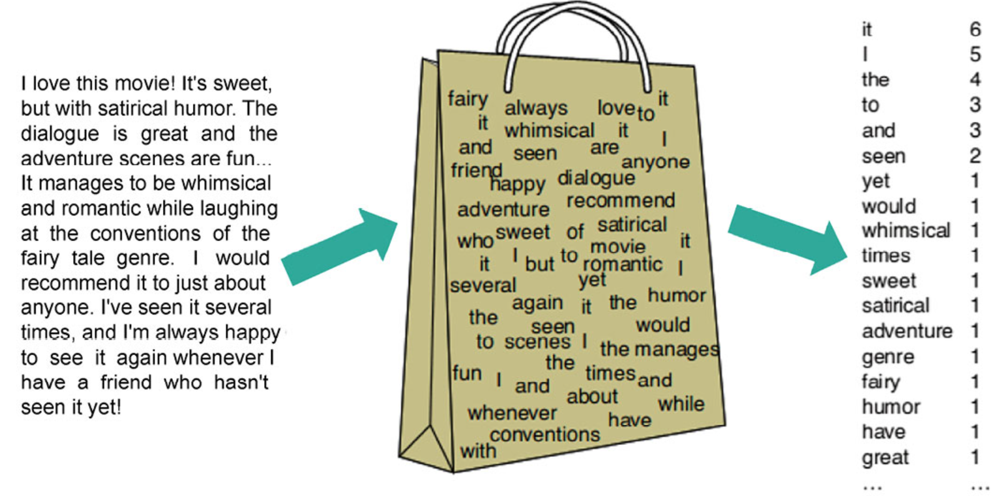

# 词袋模型
# 一、开篇：为什么需要词袋模型？—— 让计算机理解文本的初步尝试
想象一下，我们人类能轻松阅读和理解一篇文章，判断它的主题，甚至感受作者的情绪。但计算机呢？它们只懂数字。如果我们想让计算机处理文本，比如自动给新闻分类，或者判断一条评论是好评还是差评，首先就得把文本转换成计算机能 “看懂” 的数字形式。
词袋模型，就是这样一种简单而直观的 ** 文本表示方法 **。它像一个神奇的 “袋子”，把一篇文章或一句话里的所有词语都 “扔” 进去，不关心这些词原来是怎么排列的，也不关心复杂的语法结构，只在乎袋子里有哪些词，以及每个词出现了多少次。

# 二、词袋模型的核心思想：化繁为简，关注核心
词袋模型的核心在于：
- 忽略词序： “我爱北京天安门” 和 “天安门北京我爱”，在词袋模型看来，如果词频相同，它们的表示可能非常相似。这就像我们点菜，点了一份 “宫保鸡丁” 和一份 “鱼香肉丝”，服务员记账时可能只关心这两道菜，而不太关心你先点哪个后点哪个。
- 关注词频： 一个词在文本中出现的次数越多，通常认为它对表达文本意义的贡献也越大（当然，这也有例外，后面会提到 TF-IDF）。
# 三、构建词袋模型的具体步骤：一步步揭开 “魔法袋子” 的秘密
让我们以你之前的语料库为例，详细走一遍构建词袋模型的过程：
# 语料库 (Corpus)：
- 【你好，我是人类】
- 【你好，我是机器人】
- 【今天天气不错】
# 步骤 1：文本预处理 (Text Preprocessing)
这是将原始文本变得 “干净” 和 “标准化” 的过程，非常关键。
-
分词 (Tokenization)： 将句子切分成一个个独立的词语或符号（称为 token）。中文分词尤其重要。
- 【你好，我，是，人类】
- 【你好，我，是，机器人】
- 【今天，天气，不错】
- 说明： 这里的逗号我们暂时保留，但在实际操作中，标点符号通常会被去除。
-
(可选) 转小写 (Lowercasing)： 对于英文等有大小写区分的语言，统一转为小写，避免 "Apple" 和 "apple" 被视为两个不同的词。中文不涉及。
-
(可选) 去除标点符号 (Punctuation Removal)： 标点符号通常对文本的语义核心贡献不大，可以去除。
- 如果去除逗号，分词结果会变成：
- 【你好，我，是，人类】
- 【你好，我，是，机器人】
- 【今天，天气，不错】
- 注意： 你之前的分词结果是
你好，我，是，人类...，这里有个小细节，分词工具可能会把 “你好，” 直接分成 “你好” 和 “，” 两个 token。为了简化，我们假设分词后已处理标点。
- 如果去除逗号，分词结果会变成：
-
(可选) 去除停用词 (Stop Word Removal)： 停用词是指那些非常常见但信息含量较低的词，如 “的”、“是”、“了”、“啊”、“我”、“你” 等。去除它们可以减少噪音，降低后续向量的维度。
- 假设我们的停用词表包含：“我”、“是”。那么处理后：
- 【你好，人类】
- 【你好，机器人】
- 【今天，天气，不错】(不受影响)
- 注意： 是否去除停用词取决于具体任务。有时 “我” 这类词在情感分析中可能有用。为了与你最初的例子保持一致，我们暂时不去除 “我” 和 “是”。
- 假设我们的停用词表包含：“我”、“是”。那么处理后：
-
(可选) 词形还原 (Lemmatization) / 词干提取 (Stemming)： 主要用于英文等屈折变化的语言，将词语还原到其基本形态，如 "running", "ran" -> "run"。中文应用较少。
# 步骤 2：构建词典 (Vocabulary Construction)
收集预处理后语料库中所有不重复的词语，形成一个词典。这个词典的顺序一旦确定，后面所有文本向量化时都要严格遵守这个顺序。
基于你最初的分词结果（保留 “我”、“是”，不去除标点，假设逗号被分词器作为独立 token 或在下一步被忽略）：
词典： [你好, 我, 是, 人类, 机器人, 今天, 天气, 不错]
（这里我们按照你给出的词典顺序。实际操作中，词典顺序可以是按词频、按字母顺序等。）
# 步骤 3：文本向量化 (Text Vectorization)
将每个文本（句子或文档）转换成一个数值向量。向量的维度就是词典的大小。向量中的每一个位置对应词典中的一个词。该位置的值表示对应词语在该文本中的某种度量。
-
常见度量方式 1：词频 (Term Frequency, TF)
直接统计词典中每个词在当前文本中出现的次数。- 语料 1：【你好，我是人类】
- "你好": 1, "我": 1, "是": 1, "人类": 1, "机器人": 0, "今天": 0, "天气": 0, "不错": 0
- 向量表示：
[1, 1, 1, 1, 0, 0, 0, 0]
- 语料 2：【你好，我是机器人】
- "你好": 1, "我": 1, "是": 1, "人类": 0, "机器人": 1, "今天": 0, "天气": 0, "不错": 0
- 向量表示：
[1, 1, 1, 0, 1, 0, 0, 0]
- 语料 3：【今天天气不错】
- "你好": 0, "我": 0, "是": 0, "人类": 0, "机器人": 0, "今天": 1, "天气": 1, "不错": 1
- 向量表示：
[0, 0, 0, 0, 0, 1, 1, 1]
这与你给出的向量表示一致，它其实是一种简化的词频，更像是布尔 / 二元表示（出现为 1，不出现为 0）。如果一句话是 “你好，你好，我是人类”，那么严格的词频向量，“你好” 对应的位置应该是 2。
- 语料 1：【你好，我是人类】
-
常见度量方式 2：TF-IDF (Term Frequency-Inverse Document Frequency)
这是词袋模型最常用的改进。它认为一个词的重要性不仅取决于它在当前文本中出现的频率（TF），还取决于它在整个语料库中的稀有程度（IDF）。- TF (Term Frequency)：词 w 在文档 d 中出现的频率。
- IDF (Inverse Document Frequency)：
log(语料库中文档总数 / (包含词w的文档数 + 1))。如果一个词在很多文档中都出现，说明它通用性强，区分度低，IDF 值就小。反之，如果一个词只在少数文档中出现，IDF 值就大。 - TF-IDF = TF * IDF。
- 举例： 在大规模新闻语料中，“的”、“了” 这类词 TF 很高，但因为几乎每篇新闻都有，所以 IDF 很低，TF-IDF 值就不高。而一个专业术语，如 “夸克”，在某篇物理学文章中 TF 可能很高，同时因为它在整个新闻语料中出现的文档数少，IDF 也会很高，所以 TF-IDF 值就很高，更能代表这篇文章的特色。
# 四、文本相似度计算：用余弦相似度衡量 “距离”
一旦文本被转换成向量，我们就可以用数学方法来比较它们了。余弦相似度 (Cosine Similarity) 是最常用的方法之一。
- 原理： 计算两个向量在高维空间中夹角的余弦值。它关注的是向量间的方向差异，而非绝对大小。
- 取值范围：
- 对于由词频或 TF-IDF 构成的非负向量，余弦相似度的范围是 [0, 1]。
- 1： 表示两个向量方向完全一致，文本内容（在 BoW 表示下）非常相似。
- 0： 表示两个向量正交，即它们没有共同的词语（在 BoW 表示下），方向完全不同。
- 越接近 1，越相似；越接近 0，越不相似。
- 计算示例（沿用你的例子）：
- V1 (你好，我是人类) =
[1,1,1,1,0,0,0,0] - V2 (你好，我是机器人) =
[1,1,1,0,1,0,0,0] - 点积 (V1, V2) = 1*1 + 1*1 + 1*1 + 1*0 + 0*1 + 0*0 + 0*0 + 0*0 = 3
- ||V1|| (V1 的模) = sqrt (1²+1²+1²+1²+0²+0²+0²+0²) = sqrt (4) = 2
- ||V2|| (V2 的模) = sqrt (1²+1²+1²+0²+1²+0²+0²+0²) = sqrt (4) = 2
- 余弦相似度 = 点积 / (||V1|| * ||V2||) = 3 / (2 * 2) = 3/4 = 0.75。
这个 0.75 表示这两句话在词袋模型下是比较相似的，符合直觉。
- V1 (你好，我是人类) =
# 五、词袋模型的应用场景：简单模型的用武之地
尽管简单，词袋模型在许多 NLP 任务中仍能取得不错的效果，或作为基线模型：
- 文本分类 (Text Classification)： 如垃圾邮件识别、新闻主题分类（体育、财经、娱乐）、情感分析（判断评论是积极还是消极）。
- 例如： 收集大量已标记为 “体育” 或 “财经” 的新闻，用 BoW（通常是 TF-IDF）表示它们，然后训练一个分类器（如逻辑回归、朴素贝叶斯、SVM）。当新来一篇新闻时，同样用 BoW 表示，分类器就能预测它的类别。
- 文档聚类 (Document Clustering)： 将相似的文档自动分到一组，无需预先标记。
- 信息检索 (Information Retrieval)： 搜索引擎的早期模型就大量借鉴了词袋思想，匹配查询词和文档中的词。
# 六、词袋模型的优点与缺点：一把双刃剑
优点：
- 简单直观： 原理和实现都相对简单，易于理解。
- 高效性： 对于某些任务和数据集，BoW 配合简单的线性模型，计算速度快，效果也不错。
- 作为基准： 是一个很好的基线模型，用来衡量更复杂模型的提升幅度。
缺点：
- 忽略词序，丢失上下文信息： 这是最主要的缺点。
- 例如： “狗咬人” 和 “人咬狗”，词袋表示可能完全一样，但语义天差地别。
- “我不喜欢这部电影” 和 “我非常喜欢这部电影”，如果 “不” 和 “非常” 没有被特别处理或权重不高，它们的相似度可能比实际语义更高。
- 无法捕捉语义相似性： BoW 将每个词视为独立的符号。
- 例如： “轿车” 和 “汽车” 在语义上高度相关，但在 BoW 中是两个完全不同的维度，它们的向量表示可能是正交的（如果没有共同词）。
- 维度灾难与稀疏性： 当语料库很大时，词典也会非常庞大（几十万甚至上百万个词）。这导致：
- 高维度： 每个文本向量的维度非常高。
- 稀疏性： 一个具体的文本通常只包含词典中一小部分词，所以其向量中绝大多数元素都是 0。这给存储和计算带来挑战，也可能影响某些模型的性能。
- 未登录词 / 集外词 (Out-of-Vocabulary, OOV) 问题： 如果测试数据中出现了训练时词典里没有的新词，BoW 模型无法处理，通常会直接忽略这些新词，导致信息损失。
# 总结
词袋模型是你踏入自然语言处理中 “文本表示” 这一核心领域的第一块重要基石。它用一种简单的方式将非结构化的文本数据转换为了机器可以处理的结构化数值数据，为后续的机器学习应用打开了大门。虽然它有明显的局限性，但理解它的原理、构建过程、优缺点，对于学习和 appreciating 更高级的 NLP 技术至关重要。你已经对它有了很好的掌握，继续加油！